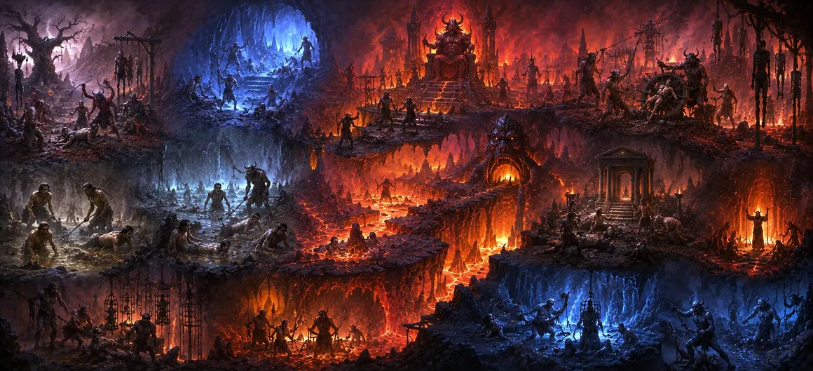

नर्क के लोक
अध्याय 7 में आत्मा के सीमा पार पारगमन और भगवान यम के समक्ष उसके आगमन के बाद, अध्याय 8 हमारा ध्यान अंडरवर्ल्ड की स्थलाकृति की ओर आकर्षित करता है। यह निचली भूमिगत परतों के नीचे स्थित नरक (नरक) के विभिन्न क्षेत्रों का विस्तृत वर्गीकरण प्रदान करता है।
पुराणिक ब्रह्माण्ड विज्ञान में, नरक अराजक, अराजक गड्ढे नहीं हैं, बल्कि धर्म राजा के प्रत्यक्ष अधिकार क्षेत्र के तहत संचालित होने वाले सावधानीपूर्वक डिजाइन किए गए क्षेत्र हैं। प्रत्येक विशिष्ट क्षेत्र अधर्मी कार्रवाई की विशिष्ट आवृत्तियों से मेल खाता है, जो ब्रह्मांडीय संतुलन के लिए एक सटीक संरचनात्मक ढांचा स्थापित करता है।
इन अट्ठाईस प्राथमिक क्षेत्रों के संरचनात्मक डिजाइन और नामों को समझकर, साधक यह पहचानता है कि प्रत्येक कर्म बीज अपने अंतिम समाधान और शुद्धिकरण के लिए एक पूरी तरह से मेल खाने वाला क्षेत्र पाता है।
अध्याय 8 की मुख्य बातें
भूमिगत भूगोल
पृथ्वी के नीचे नारकीय क्षेत्रों की सटीक ब्रह्माण्ड संबंधी स्थिति का विवरण।
28 प्राथमिक नरक
रौरव से अवीची और उससे आगे तक मुख्य प्रभागों की गणना करता है।
कर्म अनुनाद
दिखाता है कि प्रत्येक विशिष्ट क्षेत्र विशेष मानसिक और नैतिक विचलन के साथ कैसे संरेखित होता है।
पर्यावरणीय विविधता
नरक के तापीय, जलीय, अंधेरे और घने भौतिक वातावरण का वर्णन करता है।
शुद्धिकरण प्रयोजन
इसे शाश्वत दंड के रूप में नहीं, बल्कि अस्थायी, पुनर्स्थापनात्मक सुधार के रूप में तैयार किया गया है।
दुखों का पुल
सक्रिय दंडों पर अध्याय 9 के विवरण के लिए स्थानिक आधार तैयार करता है।
इस अध्याय में मुख्य विषय
- 01 निचले लोकों की ब्रह्माण्ड संबंधी स्थिति →
- 02 अट्ठाईस प्रधान नरकों की गणना →
- 03 आग्नेय क्षेत्र: कुम्भीपाक और जलन क्षेत्र →
- 04 छाया का रसातल: तमिस्रा और अंधतामिस्र →
- 05 रेजर-पत्ती वन: असिपत्रवन →
- 06 दबाव के क्षेत्र: सुकरमुख और संदामसा →
- 07 माध्यमिक और लघु उप-क्षेत्र (उपसर्ग) →
- 08 यम के आदेश की प्रशासनिक परिशुद्धता →
- 09 नीदरअस्तित्व की अस्थायी और उपचारात्मक प्रकृति →
- 10 अध्याय 9 की ओर : नरक की पीड़ाएँ →
निचले लोकों की ब्रह्माण्ड संबंधी स्थिति
अध्याय 8 पौराणिक ब्रह्मांड के भीतर नरकों की स्थानिक स्थिति का वर्णन करता है। पृथ्वी की निचली सीमाओं (भूमंडल) और गर्भोदक महासागर के ब्रह्मांडीय जल के बीच स्थित, ये क्षेत्र सीधे भगवान यम की देखरेख में स्थित हैं।
यह स्थान मानव क्रिया के स्तर के नीचे स्थित एक क्षेत्र को दर्शाता है, जहां आत्माएं अस्थायी रूप से घने, अनसुलझे कर्म के बोझ को हल करने के लिए उतरती हैं।
भूगोल को अवरोही परतों में व्यवस्थित रूप से व्यवस्थित किया गया है, प्रत्येक स्तर शुद्ध करने वाली शक्तियों की विभिन्न तीव्रता के साथ कंपन कर रहा है।
अट्ठाईस प्रधान नरकों की गणना
पाठ में अट्ठाईस मुख्य नारकीय क्षेत्रों की रूपरेखा दी गई है, जिनमें से प्रत्येक में नैतिक अपराधों के विशिष्ट तरीके स्थापित किए गए हैं:
1. रौरव, 2. महारौरव, 3. वह्नि, 4. वैतरणी, 5. कुंभीपाक, 6. कालसूत्र, 7. तमिस्र, 8. अंधतामिस्र, 9. सुकरमुख, 10. अंधकूप, 11. कृमिभोजन, 12. संदमसा, 13. तप्तसुर्मी, 14. वज्रकंटक-सलमालि, 15. वैतरणी-तता, 16. पुयोदा, 17. प्राणरोध, 18. विसासन, 19. लालाभाक्ष, 20. सारमेयादान, 21. अवीचि, 22. अयहपान, 23. क्षारकर्दम, 24. रक्ताहोभोज, 25. सुलाप्रोटा, 26. दंडसुका, 27. अवतानि, और 28. पर्यावरण.
इनमें से प्रत्येक क्षेत्र में विशिष्ट आयामी गुण, पर्यावरणीय विशेषताएं और शासन नियम हैं जो विशेष कर्म पैटर्न के साथ पूरी तरह से संरेखित हैं।
आग्नेय क्षेत्र: कुम्भीपाक और जलन क्षेत्र
प्राथमिक नरकों में प्रमुख हैं आग्नेय या ताप-आधारित क्षेत्र, जैसे कुंभीपाक, कालसूत्र और वाहनी। इन क्षेत्रों में उबलते तेल, चमकते तांबे के फर्श और निरंतर तीव्र गर्मी होती है।
ये वातावरण स्वार्थी इच्छाओं की तीव्र जलन और जीवित प्राणियों को होने वाले नुकसान का प्रतिनिधित्व करते हैं, जो अनियंत्रित जुनून की आंतरिक गर्मी को दर्शाते हैं।
इन क्षेत्रों में, यताना शरीरा का भौतिक-समान घनत्व गहरे निहित स्वार्थी प्रवृत्तियों को भस्म करने के लिए अत्यधिक थर्मल दबाव के अधीन है।
छाया का रसातल: तमिस्रा और अंधतामिस्र
अग्नि लोकों के विपरीत, तमिस्र (उदास) और अंधतामिस्र (अंधकार) प्रकाश, ध्वनि और अभिविन्यास से रहित क्षेत्रों का प्रतिनिधित्व करते हैं।
ये क्षेत्र उन आत्माओं को समायोजित करते हैं जिन्होंने गंभीर धोखे, विश्वास के साथ विश्वासघात और आध्यात्मिक अंधापन का अभ्यास किया, उन्हें अपने स्वयं के आंतरिक अंधेरे विकल्पों के बाहरी प्रतिबिंब में डाल दिया।
इन रसातल क्षेत्रों में पूर्ण अलगाव आत्मा को अंदर की ओर मजबूर करता है, जिससे उसकी स्व-निर्मित अज्ञानता की पहचान शुरू होती है।
रेजर-पत्ती वन: असिपत्रवन
असिपत्रवन को एक घने जंगल के रूप में वर्णित किया गया है जहां पेड़ों की पत्तियां उस्तरा-तेज तलवारों और खंजरों से बनी होती हैं।
पेड़ों के बीच से गुजरने वाली हवा उन लोगों पर लगातार तेज पत्ते गिराती है, जिन्होंने लापरवाह आनंद के लिए पवित्र व्रत, कर्तव्य और आध्यात्मिक अनुशासन को त्याग दिया है।
वन टोपोलॉजी उन दर्दनाक परिणामों का प्रतिनिधित्व करती है जब तीव्र, अनुशासनहीन कार्य नैतिक स्थिरता को नष्ट कर देते हैं।
दबाव के क्षेत्र: सुकरमुख और संदामसा
सुकरमुख और सैंडामसा जैसे क्षेत्रों में अत्यधिक कुचलने वाली ताकतें, संकीर्ण दरारें और भारी यांत्रिक दबाव होते हैं।
ये क्षेत्र उन लोगों की मेजबानी करते हैं जिन्होंने कमजोरों को कुचल दिया, असहायों का शोषण किया, या दूसरों की पीड़ा के प्रति उदासीन उदासीनता के साथ धन जमा किया।
इन स्थानिक परतों का क्लॉस्ट्रोफोबिक डिज़ाइन लालच की संकीर्णता और उत्पीड़न के भारी वजन को दर्शाता है।
माध्यमिक और लघु उप-क्षेत्र (उपसर्ग)
अट्ठाईस प्राथमिक नरकों के आसपास सैकड़ों छोटे उप-लोक (उपसर्ग) हैं जो कर्म ऋण की बारीक बारीकियों को संबोधित करने के लिए डिज़ाइन किए गए हैं।
ये द्वितीयक स्थान यह सुनिश्चित करते हैं कि कोई भी कार्रवाई - चाहे वह कितनी ही मामूली या विशिष्ट क्यों न हो - ब्रह्मांडीय अध्यादेश द्वारा बिना ध्यान दिए या गलत निर्णय नहीं छोड़ी जाती है।
इन उपविभागों की विशाल बहुलता आध्यात्मिक कानून की अनंत सटीकता को उजागर करती है।
यम के आदेश की प्रशासनिक परिशुद्धता
अध्याय 8 स्पष्ट करता है कि नारकीय लोक यम के नियुक्त अधिकारियों की निगरानी में उच्च प्रशासनिक व्यवस्था के साथ संचालित होते हैं।
इन निचले स्तरों में कोई द्वेष, व्यक्तिगत क्रूरता या मनमानी ज्यादती नहीं है; प्रत्येक क्षेत्र निश्चित ब्रह्मांडीय विधियों के अनुसार शासित होता है।
इस संरचनात्मक सटीकता से पता चलता है कि सृष्टि के सबसे अंधेरे हिस्से भी ईश्वरीय कानून (धर्म) द्वारा कायम हैं।
नीदरअस्तित्व की अस्थायी और उपचारात्मक प्रकृति
अध्याय 8 में जोर दिया गया एक केंद्रीय सिद्धांत यह है कि किसी भी नारकीय क्षेत्र में निवास पूरी तरह से अस्थायी है।
एक बार जब विशिष्ट कर्म चार्ज जो आत्मा को एक विशेष क्षेत्र में ले जाता है, उसके पर्यावरण के संपर्क में आने से जल जाता है, तो आत्मा को उसके विकासवादी उत्थान को फिर से शुरू करने के लिए छोड़ दिया जाता है।
इस प्रकार, नरक के क्षेत्र आध्यात्मिक अस्पतालों के रूप में कार्य करते हैं - सफाई और पुनर्व्यवस्था के लिए दर्दनाक लेकिन आवश्यक स्थान।
अध्याय 9 की ओर : नरक की पीड़ाएँ
नारकीय लोकों के स्थापत्य भूगोल, नाम और विभाजनों को विस्तृत करते हुए, अध्याय 8 अपने संरचनात्मक अवलोकन का निष्कर्ष निकालता है।
अब यह जांचने के लिए मंच तैयार है कि इन विशिष्ट स्थानों में आत्माएं सीधे तौर पर क्या अनुभव करती हैं।
यह स्वाभाविक रूप से अध्याय 9, **नरक की पीड़ा** में प्रवाहित होता है, जो स्थानिक टोपोलॉजी से प्रत्येक नरक के भीतर होने वाले ज्वलंत, सक्रिय अनुभवों और शुद्धिकरण की ओर बढ़ता है।
अध्याय 8 की प्रमुख शिक्षाएँ
लौकिक परिशुद्धता
ब्रह्माण्ड कोई विवरण नहीं छोड़ता; प्रत्येक कर्म क्रिया का एक संगत गंतव्य होता है।
मन का दर्पण
नरक का वातावरण मानव चेतना की अंधकारमय, अपरिष्कृत अवस्था को दर्शाता है।
निष्पक्ष न्याय
भगवान यम ब्रह्मांडीय व्यवस्था के कड़ाई से पालन के साथ सभी अट्ठाईस नरकों पर शासन करते हैं।
परिमित अवधि
नरक स्थायी नहीं है; यह तब समाप्त होता है जब विशिष्ट नकारात्मक कर्म चार्ज समाप्त हो जाता है।
मोचन उद्देश्य
लोक गंभीर अशुद्धियों की आत्मा को शुद्ध करने और आंतरिक संतुलन बहाल करने के लिए मौजूद हैं।
शिव के माध्यम से सुरक्षा
भगवान शिव की निरंतर भक्ति कर्मों को शुद्ध करती है, इन लोकों में प्रवेश को रोकती है।
आध्यात्मिक चिंतन
अध्याय 8 हमें सिखाता है कि सृजन में आंतरिक असामंजस्य की हर डिग्री को हल करने के लिए डिज़ाइन किए गए स्थान शामिल हैं। अट्ठाईस प्राथमिक नरक दैवीय प्रतिशोध के स्थान नहीं हैं, बल्कि एक न्यायपूर्ण ब्रह्मांड की आवश्यक संरचनात्मक विशेषताएं हैं। जिस तरह एक भौतिक शरीर गंभीर बीमारी को खत्म करने के लिए गहन चिकित्सा उपचार से गुजरता है, उसी तरह सूक्ष्म शरीर घने नकारात्मक प्रभावों को साफ करने के लिए इन क्षेत्रों से गुजरता है। इन क्षेत्रों के अस्तित्व और संरचना को पहचानने से, हम नैतिक कानून (धर्म) के प्रति गहरा सम्मान प्राप्त करते हैं और महादेव की भक्ति के माध्यम से अपने दैनिक कार्यों को शुद्ध करने के तत्काल मूल्य का एहसास करते हैं।
अध्याय 8 का संदेश जीना
हर दिन आपके द्वारा चुने गए विकल्पों के बारे में जागरूकता बढ़ाकर अध्याय 8 की अंतर्दृष्टि को लागू करें। धोखे, क्रूरता या लालच में निहित कार्यों से बचें, यह समझते हुए कि बाहर भेजी गई प्रत्येक ऊर्जा अपने अनुरूप वातावरण का निर्माण करती है।
अपने मार्ग को उज्ज्वल और उच्च लोकों के साथ संरेखित रखने के लिए अपनी चेतना को भगवान शिव में स्थापित करते हुए, सच्चाई, सौम्यता और निस्वार्थ सेवा का विकास करें।
प्रमुख आध्यात्मिक अवधारणाएँ
कर्म शुद्धि के लिए निर्दिष्ट भूमिगत क्षेत्रों के लिए सामान्य पौराणिक शब्द।
सबसे प्रमुख नारकीय लोकों में से एक उन लोगों के लिए आरक्षित है जो स्वार्थी लाभ के लिए दूसरों को नुकसान पहुंचाते हैं।
गर्मी आधारित क्षेत्र में गंभीर हिंसा को शुद्ध करने के लिए बर्तनों को उबाला जाता है।
पूर्ण अंधकार का क्षेत्र उन लोगों को सौंपा गया है जिन्होंने गहरे धोखे और विश्वासघात का अभ्यास किया।
रेज़र-लीफ़्ड वन क्षेत्र जहां टूटी हुई पवित्र प्रतिज्ञाओं और कर्तव्यों को संबोधित किया जाता है।
विशिष्ट छोटे अपराधों के लिए अधीनस्थ या द्वितीयक नारकीय क्षेत्र।
अध्याय सारांश
उमा संहिता अध्याय 8 अंडरवर्ल्ड का एक व्यवस्थित खाका प्रदान करता है, जो ब्रह्माण्ड संबंधी स्थान, संरचनात्मक डिजाइन और नारकीय लोकों (नरक) के नामकरण परंपराओं को परिभाषित करता है। इसमें अट्ठाईस प्राथमिक नरकों का विवरण दिया गया है - जिनमें रौरव, कुम्भीपाक, तमिस्र और असिपत्रवन शामिल हैं - और सैकड़ों छोटे उप-लोकों को छूता है। इस बात पर जोर देते हुए कि ये क्षेत्र भगवान यम के उचित, व्यवस्थित आदेश के तहत काम करते हैं, अध्याय स्पष्ट करता है कि नरक शाश्वत दंड के स्थान नहीं हैं, बल्कि अस्थायी, सुधारात्मक वातावरण हैं जो घने कर्म ऋणों को जलाने के लिए हैं। यह लेआउट अध्याय 9 के सक्रिय नारकीय अनुभवों की खोज के लिए स्थानिक आधार तैयार करता है।
अक्सर पूछे जाने वाले प्रश्न
① उमा संहिता अध्याय 8 का प्राथमिक विषय क्या है?
अध्याय 8 पृथ्वी के नीचे स्थित नारकीय लोकों (नरक) के संरचनात्मक लेआउट, विभाजन और विशिष्ट क्षेत्रों का वर्णन करने पर केंद्रित है।
②इस अध्याय में कितने प्रमुख नरक गिनाये गये हैं?
पाठ व्यवस्थित रूप से अट्ठाईस प्राथमिक नारकीय लोकों का विवरण देता है, साथ ही विशिष्ट कर्म उल्लंघनों के अनुरूप सैकड़ों माध्यमिक उप-लोकों का भी विवरण देता है।
③ अध्याय 8 में वर्णित कुछ प्रमुख नारकीय लोक क्या हैं?
प्रसिद्ध लोकों में रौरव, महारौरव, कुम्भीपाक, तमिस्रा, अंधतामिस्र और असिपत्रवन शामिल हैं।
④ क्या पौराणिक ब्रह्माण्ड विज्ञान में नरक स्थायी हैं?
नहीं, नरक अस्थायी सुधारात्मक वातावरण हैं जहां सूक्ष्म शरीर विकासवादी जीवन चक्र में वापस जाने से पहले विशिष्ट नकारात्मक कर्मों को समाप्त कर देते हैं।
⑤ अध्याय 8, अध्याय 9 से कैसे जुड़ता है?
अध्याय 8 नरकों की स्थलाकृति और भौगोलिक नामों को रेखांकित करता है, अध्याय 9 में प्रत्येक क्षेत्र में अनुभवात्मक पीड़ाओं और दंडों की विशिष्ट परीक्षा की स्थापना की गई है।
"वह जो सभी लोकों में ब्रह्मांडीय व्यवस्था को देखता है, वह शिव की कृपा से सुरक्षित होकर, छायादार स्थानों से सुरक्षित चलता है।"
उमा संहिता के माध्यम से जारी रखें
अध्याय 8 नारकीय लोकों के भूगोल और श्रेणियों की रूपरेखा बताता है। प्रत्येक क्षेत्र में हुए विशिष्ट अनुभवों और कष्टों का पता लगाने के लिए अध्याय 9 की ओर आगे बढ़ें।